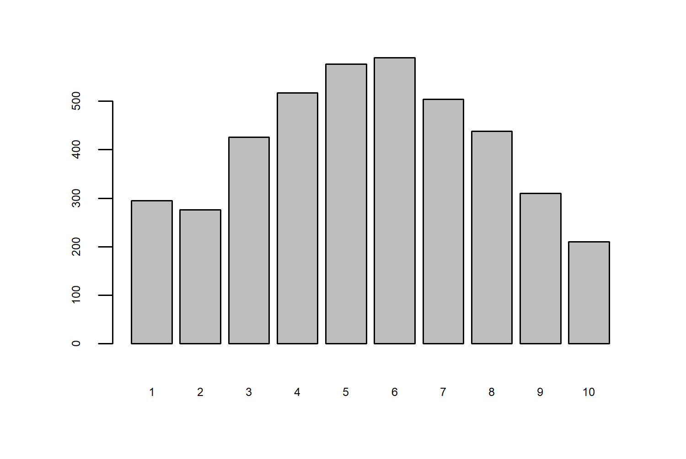
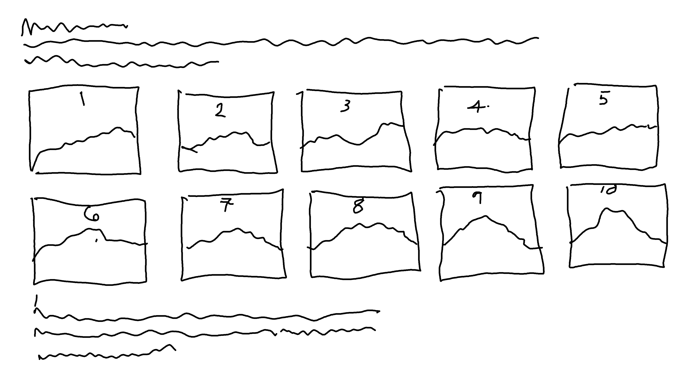
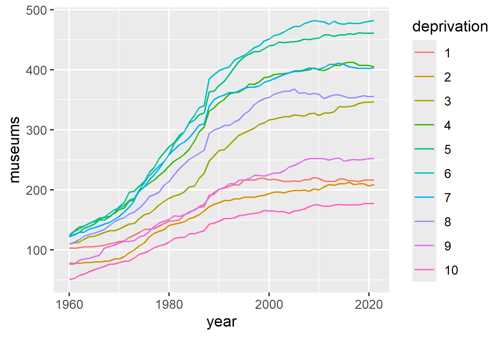
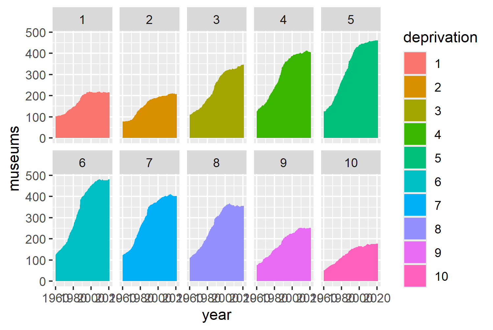
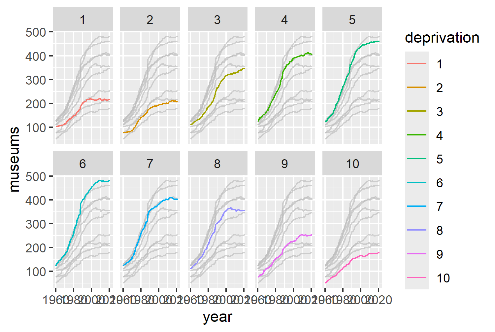
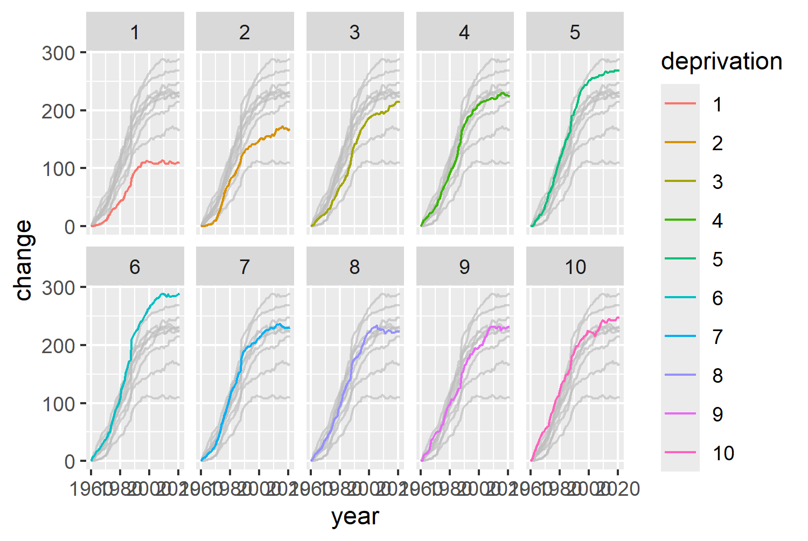
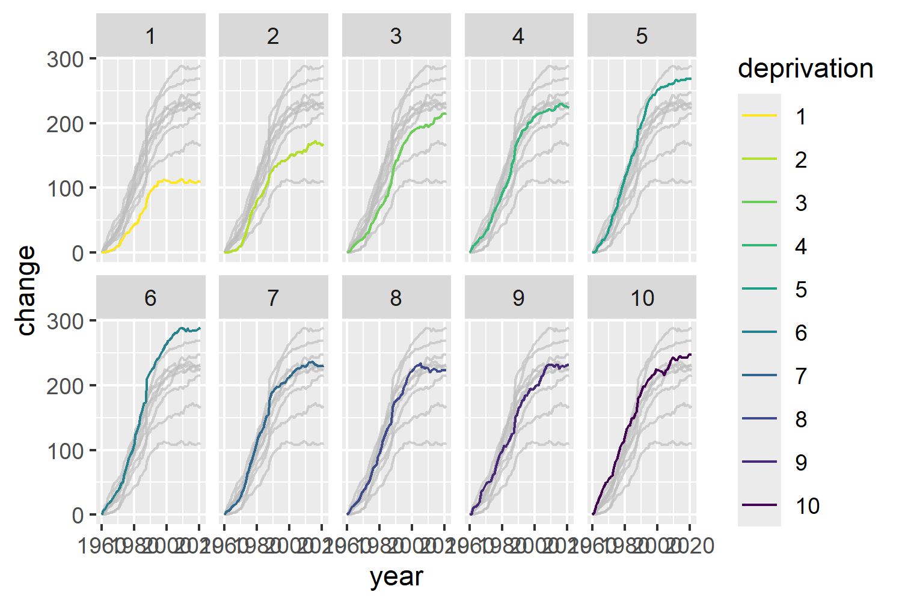
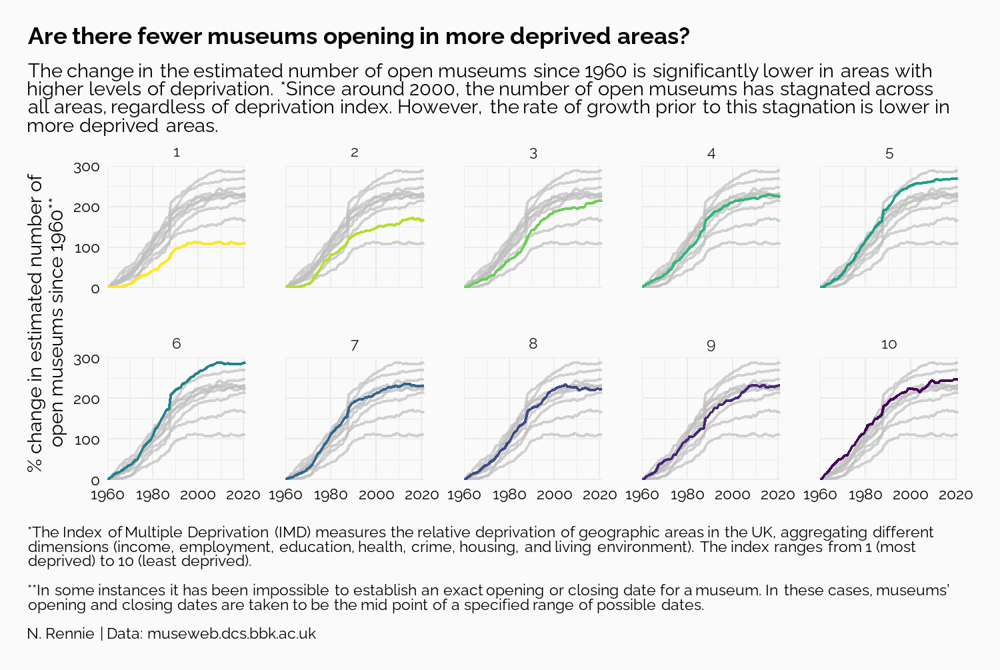

tuesdata <- tidytuesdayR::tt_load("2022-11-22")
museums <- tuesdata$museums3 UK museums: highlighting line charts with {gghighlight}
In this chapter we’ll consider different ways of visualising data that varies over time, aiming to avoid spaghetti charts, with the help of the {gghighlight} extension package.
3.1 Data
The Mapping Museums project (Mapping Museums 2021) has collected data relating to over 4,000 museums in the UK, covering museums from 1960 onward. The data can be downloaded from the Mapping Museums website at museweb.dcs.bbk.ac.uk. It was also used as a TidyTuesday (R4DS Online Learning Community 2023) data set in November 2022 (after being suggested by Tom Mock), and we’ll use that version for this chapter.
Let’s start by reading in the data using the tidytuesdayR R package (Hughes 2022b) and looking at the definitions of the variables:
The data contains information for 35 different variables on 4191 museums. After the first museum_id columns, the next 8 columns provide information on the location of the museum - including address and co-ordinates. The next set of columns provides information about the museums such as whether it’s an accredited museum, how it’s governed, what types of items it has, and when it was open. Since this is a collated data set, information is also provided on the original source of the data for some of these variables. The remaining columns provide information on the area in which the museum is located, including information about different deprivation indices and geo-demographic group (type of area e.g. "University Towns and Cities"). A full glossary of the terms used can be found on the Mapping Museums website at museweb.dcs.bbk.ac.uk/glossary.
3.2 Exploratory work
Let’s start exploring what these variables look like!
Tip 3.1: Inspecting data
Remember that you can use View(museums) to inspect the data in a more human-readable format.
3.2.1 Data exploration
There are many different aspects of this data we could inspect:
- How are museums spread out across the UK? Is there a higher concentration of museums in more affluent areas?
- What types of museums are most prevalent in the UK? Does this vary based on whether the museum is accredited?
- How is the number of open museums changing over time? Are more museums opening than closing?
Some of the variables, such as DOMUS_Subject_Matter have quite a lot of missing values which makes it more difficult to visualise and interpret them. Although these columns definitely warrant further exploration, we’ll ignore them for now.
Given the wealth of information around deprivation indices (8 different variables), that’s the first aspect of the data that jumps out. How does the number of museums vary by index of deprivation?

Here, 1 is the most deprived, and 10 is the least deprived. This is quite an interesting relationship - there have been more museums in places with a moderate level of deprivation compared to higher or lower level. This might feel a little bit counter-intuitive, we might expect there to be more museums in more affluent areas. But looking at the total number of museums in the data per index of deprivation doesn’t tell us the whole story. How many of these museums were open at once? How many are still open today?
To get a better understanding of the relationship between deprivation and the number of museums, we could look at how the number of museums changed for each index of deprivation has changed since 1960 (the earliest date in the data set). Then we might be able to tell whether more are opening or closing, and how this varies across the different levels of deprivation.
3.2.2 Exploratory sketches
We have 10 deciles of deprivation, so we’ll have 10 time series that we want to plot that show the number of museums over time. There are different options for plotting time series like this. We need to think about some different choices:
- What type of geometry will we use? Lines, points, shaded areas? Lines are the most common approach for time series data.
- Do we plot all 10 lines on the same chart and use color to denote the different levels of deprivation?
- Or do we use faceting to split it into multiple smaller plots by deprivation index?
If we go with line charts, and faceting by deprivation index, that might look something like this:

We could achieve something this type of plot using geom_line() and facet_wrap() from {ggplot2} . We’ve talked about faceting before in Chapter 2 but we haven’t really thought much about the layouts of those facets. In Chapter 2, we used faceting with only 3 categories, where the layout choice is fairly obvious: either one column or one row. Here, we have a little bit more flexibility and we might want to think about controlling that layout.
If we leave it to the default options, {ggplot2} usually tries to coerce it into something square-ish. Here, it would likely give us a 3x4 grid filled with 10 plots (for the 10 levels of deprivation) and 2 blank spaces. It’s not always possible, but plots without those blank spaces often look a lot cleaner and tidier. We could do either a 5x2 (or 2x5) grid, or a 10x1 (or 1x10) grid to fit our small multiple plots into a perfect rectangle. A 5x2 grid works better here since we don’t want to make a very wide but very short plot.
3.3 Preparing a plot
So let’s get started on preparing the data to create this plot!
3.3.1 Data wrangling
This is one of those very real datasets - the data wrangling is not straightforward for the data. In fact, the two columns relating to opening and closing dates are the two that will require the most attention.
First, let’s drop any columns that we don’t actually need using the select() function from {dplyr} - we only need the Year_opened, Year_closed, and Area_Deprivation_index columns to calculate the number of museums open each year. There are a few NA values in the Area_Deprivation_index column so we’ll drop those rows using drop_na() from {tidyr}.
Now let’s start dealing with the year columns. If you look at the values, you’ll notice that they’re not exactly what you’d expect in a year column:
head(museums$Year_opened, 4)[1] "2012:2012" "1971:1971" "1984:1984" "1971:1971"head(museums$Year_closed, 4)[1] "9999:9999" "2007:2017" "9999:9999" "2012:2012"Each entry is in fact two years, separated by a :. According to the Mapping Museums glossary, this is because these are actually date ranges. For some museums, it wasn’t possible to establish an exact opening or closing date, and instead a date range is given based on partial information. For example, a value of "2007:2017" means the museum opened (or closed) sometime between 2007 and 2017.
Let’s separate out these year values into four columns instead of two using the separate_wider_delim() function from {tidyr} . We separate based on the :, and create two new columns, opened1 and opened2 from the Year_opened column. We do the same thing for the Year_closed closed column. We also want to make sure that these new columns are numeric rather than character columns, so we use mutate() and across() from {dplyr} to convert them using as.numeric() . We can also convert the Area_Deprivation_index to a factor rather than a numeric and make sure the order is correct.
museum_subset <- museums |>
dplyr::select(
Year_opened, Year_closed, Area_Deprivation_index
) |>
tidyr::drop_na() |>
tidyr::separate_wider_delim(
Year_opened,
delim = ":",
names = c("opened1", "opened2")
) |>
tidyr::separate_wider_delim(
Year_closed,
delim = ":",
names = c("closed1", "closed2")
) |>
dplyr::mutate(
dplyr::across(
c(opened1, opened2, closed1, closed2), as.numeric
),
Area_Deprivation_index = factor(
Area_Deprivation_index,
levels = 1:10
)
)
Tip 3.2: Using
separate() from {tidyr}
In older versions of {tidyr} (including when this plot was originally made), the separate() function would have been used instead of separate_wider_delim(). The separate() function has now been superseded.
Now we need to think about how to deal with all of these year columns:
- If the date before the
:and the date after the:are the same, we want to treat it as an exact year and only keep one value. - If the dates do not match, we need to decide a way of choosing which year to use. The simplest approach is to take the midpoint of the date range.
- If the value in the
Year_closedcolumn is"9999:9999", this means that the museum is still open.
Let’s start with the last of these issues first. For the closed1 and closed2 columns, if the value is "9999", we’ll convert it to an NA_real_ value. We can do this using a combination of mutate(), across(), and if_else() from {dplyr} .
The remaining two issues can be dealt with at the same time using case_when() from {dplyr} . We can create a new column called closed which:
- if
closed1andclosed2are equal, takes this equal value; - if
closed1andclosed2are not equal, takes the value in the middle (rounded so that we work only with whole year values).
The same approach is then applied to create another new column called opened. There are no instances in the data where one of the closing dates is NA but the other is not, so we don’t need to worry about that. We can also tidy up the output by dropping any columns we don’t need, renaming the Area_Deprivation_index to something a little bit shorter and easier to work with, and arranging the data by level of deprivation.
museum_data <- museum_subset |>
dplyr::mutate(dplyr::across(
c(closed1, closed2),
~ dplyr::if_else(.x == 9999, NA_real_, .x)
)) |>
dplyr::mutate(closed = dplyr::case_when(
closed1 == closed2 ~ closed1,
closed1 != closed2 ~ round((closed2 + closed1) / 2)
)) |>
dplyr::mutate(opened = dplyr::case_when(
opened1 == opened2 ~ opened1,
opened1 != opened2 ~ round((opened2 + opened1) / 2)
)) |>
dplyr::select(Area_Deprivation_index, opened, closed) |>
dplyr::rename(deprivation = Area_Deprivation_index) |>
dplyr::arrange(deprivation)This gives us data that looks like this:
head(museum_data)# A tibble: 6 × 3
deprivation opened closed
<fct> <dbl> <dbl>
1 1 1988 NA
2 1 1984 2007
3 1 1983 NA
4 1 1969 NA
5 1 1989 NA
6 1 1995 NAThe first entry in museums_data is a museum in the most deprived decile which opened in (approximately) 1988 and is still open.
What we want to know is how many museums were open in a given year for each level of deprivation. Let’s create a function that takes three inputs: a year of interest, a level of deprivation, and the museum_data. Inside the function, we can then filter() the data to only the level of deprivation we’re interested in. Then we can count how many museums opened before or in the year we’re interested in. We can then do the same for how many museums closed (remembering to deal with the NA values for museums that are still open). The difference between the two will be how many were open in that year.
Let’s test it works:
num_year(1980, 3)[1] 186There were 186 museums open in 1980, in an area in the third deprivation decile. Now, we need to run this function for every combination of year (from 1960 to 2021) and deprivation level (from 1 to 10). There are many different ways of doing this in R, and we’re going to use the {purrr} package (Wickham and Henry 2023). We start by creating two variables with sequences of years and levels of deprivation - this is useful for testing if the code works because we can easily change it to a smaller number of years. Then we use expand.grid to create a data.frame with all of the combinations and pass this in as the first argument to pmap_vec from {purrr}. The second argument to pmap_vec is the function we want to apply (num_year()) that we defined above), where the first argument of num_year() comes from the first column of the grid of values, and the second argument from the second column. We can then convert the output into a matrix where each column is a level of deprivation, and each row is a year.
all_years <- 1960:2021
deps <- 1:10
output <- purrr::pmap_vec(
expand.grid(all_years, deps),
~ num_year(year = .x, dep = .y)
)
results <- matrix(output,
nrow = length(all_years),
byrow = FALSE
)
colnames(results) <- 1:10Now, our data looks like this:
head(results) 1 2 3 4 5 6 7 8 9 10
[1,] 103 78 110 125 125 124 122 110 76 51
[2,] 103 78 112 132 125 131 126 113 77 53
[3,] 104 78 113 138 129 135 129 117 83 58
[4,] 105 79 118 140 136 140 130 123 85 60
[5,] 105 79 122 144 139 145 135 126 86 64
[6,] 106 80 123 148 143 147 137 128 89 67We’re almost ready to start plotting our data! We just need to convert this into a tibble() (or data.frame), add the year column using mutate(), and put the data into a long format using pivot_longer from {tidyr} . We want to end up with a 3 column data set, where the 3 columns are: year, deprivation, and museums (number of open museums).
plot_data <- results |>
tibble::as_tibble() |>
dplyr::mutate(year = all_years) |>
tidyr::pivot_longer(
-year,
names_to = "deprivation",
values_to = "museums"
) |>
dplyr::mutate(
deprivation = factor(deprivation, levels = 1:10)
)3.3.2 The first plot
One of most common approaches to visualising multiple time series, is to plot multiple lines on the same plot. Although we’re already thinking about facets, it’s still worth seeing what those line charts look like. It can help us to understand the overall variability of the data. We can create the initial plot using ggplot() to define the data and the aesthetic mapping with the aes() function. We have year on the x-axis, museums on the y-axis, and each line will have a different color based on deprivation. The actual lines are then added with geom_line().
library(ggplot2)
ggplot(
data = plot_data,
mapping = aes(
x = year,
y = museums,
color = deprivation
)
) +
geom_line()

There are a few things that jump out immediately about this plot:
- The variability is increasing over time: in 1960 the gap between the highest and lowest values is much smaller than the gap between the highest and lowest values in 2020.
- It’s difficult to tell which line belongs to which level of deprivation: some of the colors are quite similar, many of the lines intersect, and the order of the legend is generally in reverse to the order of the lines.
- It’s what we might call a spaghetti plot: it shows the overall trend across all levels, but it’s hard to tell the difference between different levels of deprivation.
Let’s go back to our previous idea, and try separating out the deprivation levels into different facets. We can do this using facet_wrap(~deprivation, nrow = 2) , with the nrow argument used to create that 5x2 grid we talked about earlier. Let’s also try changing geom_line() to geom_area(). Although line charts and area charts can both show the same data, line charts often cause us to focus more on the trend over time. In contrast, area charts often cause us to focus on the total volume over time - helping to highlight differences in total number of open museums over time rather than just increases and decreases. Remember to also change color to fill in the aesthetic mapping!
ggplot(
data = plot_data,
mapping = aes(x = year, y = museums, fill = deprivation)
) +
geom_area() +
facet_wrap(~deprivation, nrow = 2)

This tells a similar story to the initial bar chart in Figure 3.1 - there are more museums open in the areas with moderate levels of deprivation. This plot still isn’t ideal, for a couple of reasons:
- The number of open museums in 1960 is different in each faceted plot: since they all start at different levels, it makes it more difficult to compare the relative increases or decreases.
- It’s hard to directly compare one facet to another since each facet only contains one trend line: we have to imagine overlaying the lines in our head to compare one trend line to another.
We could solve these problems by making two changes:
- Rescale the data based on the number of museums open in 1960; and
- Show all 10 lines on each faceted plot but highlight only one relating to each level of deprivation.
3.3.3 Highlighting with {gghighlight}
The second change can be implemented easily using the {gghighlight} package (Yutani 2023). {gghighlight} is a {ggplot2} extension package, specifically designed for highlighting points and lines based on some conditions. Let’s switch back to geom_line() and add gghighlight::gghighlight(). We set use_direct_label = FALSE because {gghighlight} will otherwise add a label to each highlighted line - unnecessary since each line is labelled by it’s facet label already.
ggplot(
data = plot_data,
mapping = aes(
x = year,
y = museums,
color = deprivation
)
) +
geom_line() +
facet_wrap(~deprivation, nrow = 2) +
gghighlight::gghighlight(use_direct_label = FALSE)

We can also perform an additional bit of data wrangling to rescale the values by their 1960 levels. We start by filtering the data to only include data from the year 1960 and keeping only the deprivation and museums columns . Then, we join this baseline data back to our original data based on the deprivation level, and for each year calculate the percentage change since 1960 and save it in a new column called change.
lookup <- plot_data |>
dplyr::filter(year == 1960) |>
dplyr::select(deprivation, museums)
new_plot_data <- plot_data |>
dplyr::left_join(lookup, by = "deprivation") |>
dplyr::rename(
museums = museums.x,
museums_1960 = museums.y
) |>
dplyr::mutate(
change = (
100 * (museums - museums_1960) / museums_1960)
) |>
dplyr::select(year, deprivation, change)We can then re-do our line chart using the rescaled change data on the y-axis instead:
base_plot <- ggplot(
data = new_plot_data,
mapping = aes(x = year, y = change, color = deprivation)
) +
geom_line() +
facet_wrap(~deprivation, nrow = 2) +
gghighlight::gghighlight(use_direct_label = FALSE)
base_plot

This is starting to look promising, but there are still ways that we can style our chart to improve it.
3.4 Advanced styling
So what can we do to make this chart better?
- We can get rid of the legend. The colors are based on the levels of deprivation, which are already labelled on the facet titles.
- The default choice of color isn’t great - they’re not grayscale printing friendly, and they’re not colorblind friendly either.
- It’s not immediately clear what this chart shows: it could do with some text to explain what’s going on.
3.4.1 Colors
Let’s get started with choosing some colors. As discussed in Chapter 2, we’ll save color codes as variables: either using hex codes or color names. Let’s use "black" for text, and "#fafafa" for the background color. The use of a light gray rather than white for the background is primarily personal preference - it’s less glaringly bright on a screen. Although, you do have to be a bit more careful around contrast of text against the background - hence the black text.
bg_col <- "#fafafa"
text_col <- "black"For the colors of the lines, we can use the {viridis} package (Garnier et al. 2024). The {viridis} package provides multiple different color palettes which are designed to be visually pleasing, perceptually-uniform ,and colorblind friendly. The default viridis palette includes purples, blues, greens, then yellows. Viridis color palettes are most commonly used with continuous data, rather than categorical data. However, since the categories that we wish to color (levels of deprivation) are ordered, they will work well here too. The {viridis} package includes functions to add the colors to plots made with {ggplot2}. Here, we use the scale_color_viridis() function, specify that we want a discrete palette and that the lowest values should have the yellow colors with direction = -1 .
col_plot <- base_plot +
viridis::scale_color_viridis(
discrete = TRUE,
direction = -1
)
col_plot

3.4.2 Text and fonts
Let’s start by loading in a different font using font_add_google() from {sysfonts} and setting font options with {showtext} . The Raleway font is a minimalist, sans serif font, and we’ll use it for both body text and title text. We can save it as a single variable, body_font.
sysfonts::font_add_google(
name = "Raleway", family = "raleway"
)
showtext::showtext_auto()
showtext::showtext_opts(dpi = 300)
body_font <- "raleway"We also need to define a title, subtitle, and caption. Adding a question as a title can help guide readers towards what you want them to see, but also force them to look for themselves. Here, we ask Are there fewer museums opening in more deprived areas? in the title - telling readers to look at changes across the levels of deprivation, but not giving them the answer straight away.
The subtitle then goes onto explain what the answer is, and exactly what is shown in the chart. The caption is more extended here than you may see in many charts because it explains more about the source of the data and what the variables actually are. Understanding definitions of variables isn’t something we should ever take for granted. Unless you are already familiar with indices of deprivation, it may not be clear that 1 means higher levels of deprivation.
title <- "Are there fewer museums opening in more deprived areas?"
st <- "The change in the estimated number of open museums since 1960 is significantly lower in areas with higher levels of deprivation. *Since around 2000, the number of open museums has stagnated across all areas, regardless of deprivation index. However, the rate of growth prior to this stagnation is lower in more deprived areas."
cap <- "*The Index of Multiple Deprivation (IMD) measures the relative deprivation of geographic areas in the UK, aggregating different dimensions (income, employment, education, health, crime, housing, and living environment). The index ranges from 1 (most deprived) to 10 (least deprived).<br><br>**In some instances it has been impossible to establish an exact opening or closing date for a museum. In these cases, museums’ opening and closing dates are taken to be the mid point of a specified range of possible dates.<br><br>N. Rennie | Data: museweb.dcs.bbk.ac.uk"
Tip 3.3: Adding line breaks using
<br>
The caption includes HTML line breaks, <br>, since we’ll be using element_textbox_simple() from {ggtext} for processing the text elements as we’ve done in previous chapters.
Let’s add the title, subtitle, caption, and a y-axis label in using the labs() function. We can also remove the default column name label on the x-axis as it’s very clear that the x-axis shows years.
text_plot <- col_plot +
labs(
title = title, subtitle = st, caption = cap,
x = "",
y = "% change in estimated number of\nopen museums since 1960**"
)3.4.3 Adjusting themes
Now we need to edit the theme() elements to apply the text fonts and styles, edit the background colors, and remove the legend.
In {ggplot2}, the axis limits are chosen automatically based on the range of the data. It’s often useful to chose limits (and breaks) that are nice - it makes it easier to calculate where other values are. We can set scale_y_continuous(limits = c(0, 300)) to make the range of the y-axis between 0 and 300. We can also set coord_cartesian(expand = FALSE) to remove the extra space around the plot area that is added by default - giving a slightly cleaner look. Using theme_minimal() as a base, we can set the default font size and family using base_size = 7 and base_family = body_font.
Setting legend.position = "none" removes the legend on the right hand side. The plot.title.position = "plot" and plot.caption.position = "plot" arguments make sure that the title, subtitle, and caption text are all aligned with the left side of the plot area. The default is to align with the edge of the panel area (the area shaded gray by default), which doesn’t look good when you have long axis labels, or a multiline axis title on the y-axis.
The panel.spacing argument controls how close the facets are to each other - this can help to stop the year labels on side-by-side plots from overlapping. Setting plot.margin = margin(10, 15, 10, 10) adds some extra space around the outside of the plot, with the higher value on the right hand side compensating and balancing out the space from the axis title on the left hand side. The plot.background and panel.background arguments set the background color of the plot and panel areas to be the bg_col variable previously defined.
For the plot.title, plot.subtitle, and plot.caption, arguments, we use element_textbox_simple() from {ggtext} to make sure that any Markdown or HTML syntax is processed, and to automatically wrap the text in the subtitle and caption. The text is all left-aligned, with a lineheight of 0.5, and set to use the text_col variable for the color. The title font is made slightly larger and in bold. The axis.text is also set to be text_col colored with a lineheight of 0.5 using element_text().
Now, we have our final plot:
library(ggtext)
text_plot +
scale_y_continuous(limits = c(0, 300)) +
coord_cartesian(expand = FALSE) +
theme_minimal(base_size = 7, base_family = body_font) +
theme(
legend.position = "none",
plot.title.position = "plot",
plot.caption.position = "plot",
panel.spacing = unit(1, "lines"),
plot.margin = margin(10, 15, 10, 10),
plot.background = element_rect(
fill = bg_col, color = bg_col
),
panel.background = element_rect(
fill = bg_col, color = bg_col
),
plot.title = element_textbox_simple(
color = text_col,
lineheight = 0.5,
size = rel(1.2),
face = "bold",
margin = margin(b = 5)
),
plot.subtitle = element_textbox_simple(
color = text_col,
lineheight = 0.5
),
plot.caption = element_textbox_simple(
hjust = 0,
color = text_col,
lineheight = 0.5
),
axis.text = element_text(
color = text_col,
lineheight = 0.5
)
)

And we can save it to a file using ggsave():
ggsave(
filename = "museums.png",
width = 5,
height = 0.67 * 5
)3.5 Reflection
Is there anything that could still be improved about this plot? The axis text denoting the years only appears on the bottom row of faceted plots. This makes it a little bit tricky to see what’s going on in the first row without first looking at the years in the row below. It’s a fairly minor point, but adding year labels to the top row would just make it easier for a reader.
We removed the legend from the plot with the reason that the colors are based on the levels of deprivation, which are already labelled on the facet titles. This same argument could be used to remove the colors altogether. There’s no need to use color here to denote the deprivation levels when the deprivation levels are given by the facet titles. Especially since the yellow color is harder to see against the pale background color. Using a stronger color e.g. red for all highlighted lines, would be better for making the lines stand out, and reduce confusion about what the colors mean.
Each plot created during the process of developing the original version of this visualisation was captured using {camcorder}, and is shown in the gif below. If you’d like to learn more about how {camcorder} can be used in the data visualisation process, see Section 14.1.

{kind=link}
{kind=link}
{kind=link}
{kind=link}
{kind=link}
{kind=link}
{kind=link}
{kind=link}